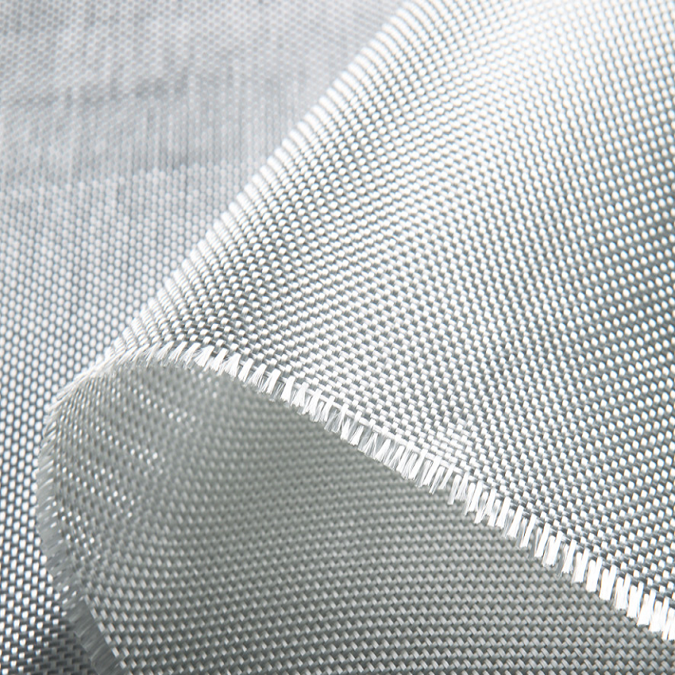
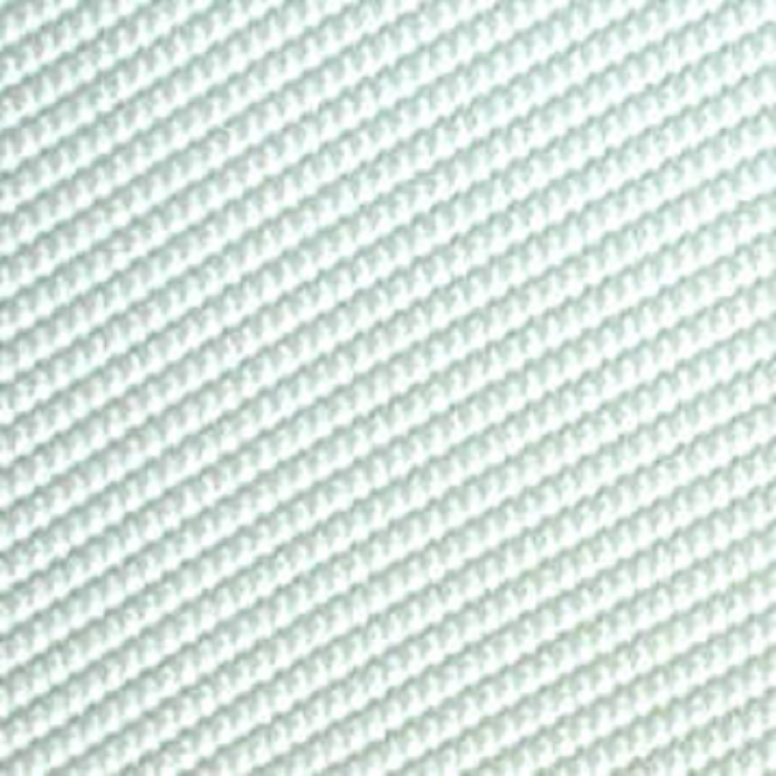

- info@baftbzanjan.com
- +98-912-4421511
- +98-243-2221537
- +98-243-2221535
شرکت بافت برزنت زنجان
پارچه های کتانی
پارچه صنعتی پنبه کج راه با بیش از 30 سال کار در کارخانه این پارچه صنعتی می تواند هم به صورت ترکیبی بافت شود و هم به تنهایی و خالص با الیاف تمام پنبه ،که هر کدام دارای خواصی ، در صنایع مختلف هسنتد. پارچه ی کتان تولیدی این شرکت بعد از شستشو با آب سرد در جهت تاربه مقدار 4/66 درصد تغییر و در جهت پودی آن 1/66 درصد دارای تغییر در ابعاد می باشد . این پارچه صنعتی در مقابل جر خوردگی مقاومتی معادل 12/4 کیلوگرم /نیرو در جهت تار و همچنین 10/81 کیلوگرم / نیرو در جهت پودی آن دارا می باشد. قابل ذکر است درجه ابعاد فشار هیدرواستایک پارچه ی کتانی (4/28 m3/min.
بیشتر بدانیم

شرکت بافت برزنت زنجان
(PP)پارچه از جنس پلی پرو پیلن
پارچه های فیلتری دارای پایداری بهتری در ابعاد قبل و بعد از نصب روی صفحه فیلتر دارد و حداکثر 3. در صد تغییر ابعاد می دهد. این پارچه دارای مقاومت سایشی مناسب بوده و رنج هوادهی متنوع دارد. واحد عبور دهی هوا معرف میزان حجم هوای عبوری از یک متر مربع در واحد زمان و در اختلاف فشار 10 میلی متر ستون آب است. این نوع پارچه بعلت درشتی تار و پود و سفت بودن آن دارای شرایط آبندی مشکل تر می باشدو برای جاهای که محلول بسیار ارزشمندی دارند توصیه نمی شود . این نوع پارچه در طیف وسیع از تنوع تولید می شود.
بیشتر بدانیم


شرکت بافت برزنت زنجان
پارچه صنعتی پلی استر پنبه پ پ
پارچه صنعتی پلی استر پنبه پ پ مخصوص فیلتر نیشکر
بیشتر بدانیمشرکت بافت برزنت زنجان
پارچه پلی آمیدی (نایلون)
شرکت بافت برزنت زنجان هم برای محیط های متفاوت استفاده می شود و ساختار نرمتری دارد و بهتر آبندی می شود .ضمنا برای گرفتن خواص متنوع از پارچه ها برای پاسخگویی به شرایط گوناگون صنعتی از پارچه با جنس ترکیبی از پنبه و پلی استر و پلی پروپیلن و… با شرایط بافت گوناگون استفاده می شود.
بیشتر بدانیمشرکت بافت برزنت زنجان
پارچه های کتانی
شرکت بافت برزنت زنجان (پارچه صنعتی پنبه کج راه) این پارچه صنعتی می تواند هم به صورت ترکیبی بافت شود و هم به تنهایی و خالص با الیاف تمام پنبه ،که هر کدام دارای خواصی ، در صنایع مختلف هسنتد. پارچه ی کتان تولیدی این شرکت بعد از شستشو با آب سرد در جهت تاربه مقدار 4/66 درصد تغییر و در جهت پودی آن 1/66 درصد دارای تغییر در ابعاد می باشد . این پارچه صنعتی در مقابل جر خوردگی مقاومتی معادل 12/4 کیلوگرم /نیرو در جهت تار و همچنین 10/81 کیلوگرم / نیرو در جهت پودی آن دارا می باشد. قابل ذکر است درجه ابعاد فشار هیدرواستایک پارچه ی کتانی (4/28 m3/min.
بیشتر بدانیم